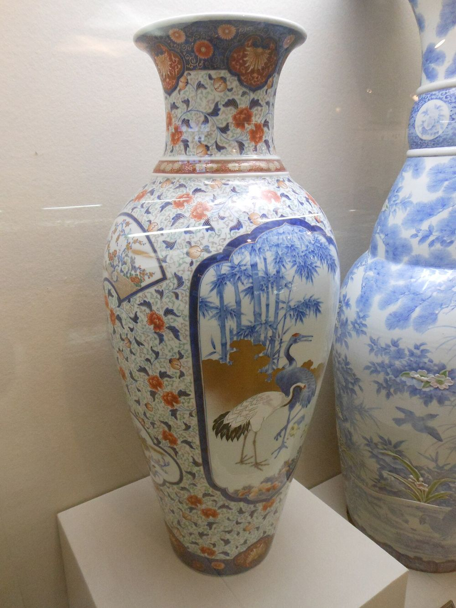
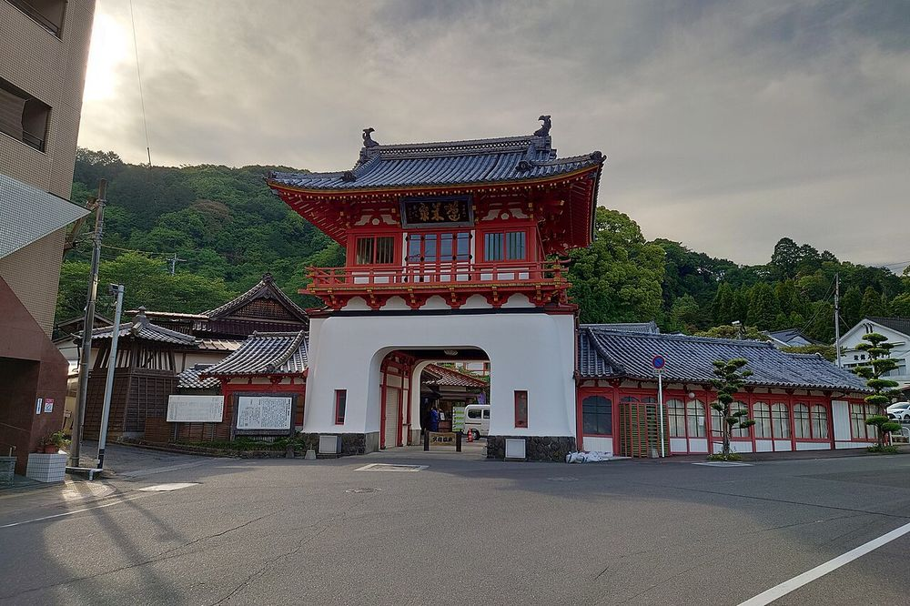
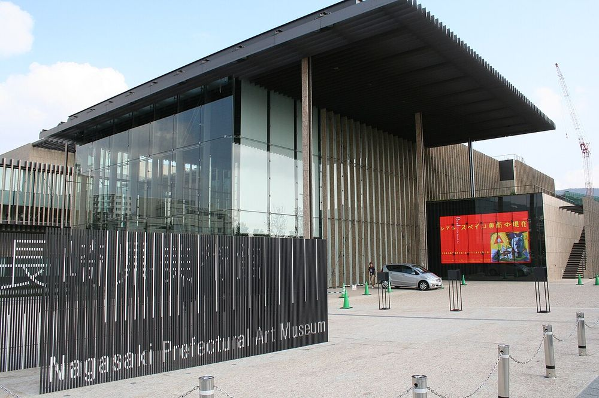

九州陶瓷与长崎自驾
从福冈出发自驾四天：九州国立博物馆、有田和伊万里的瓷器小镇、武雄温泉住一晚、长崎两天，再到陶艺小镇唐津。
- 天数
- 4 天
- 里程
- 约 385 公里
- 最佳季节
- 10–11 月
- 每人（不含机票）
- 约 CNY 3,230 起
2026 年 11 月为 12 月行程所做的调研，并用第二个调研工具交叉核对。开放时间和价格会变动，出发前请再确认。车程为估算，请以 Google 地图为准。汇率按 1 日元 ≈ 0.042 元人民币（2026 年 11 月 26 日）。
为什么选陶瓷与长崎
适合喜欢博物馆和手工艺的人：一座国立博物馆，四百年前瓷器诞生的山里至今仍在烧窑；在长崎，荷兰、中国和隐匿基督徒的历史，与隈研吾设计的美术馆只隔几站电车。每段车程都不超过一个半小时。
12 月： 凉爽，约 6–13°C，大多干燥，海边风大。年末高峰前比较清静。九州国立博物馆的卑弥呼展开到 1 月 11 日，长崎县美术馆展出雑贺雄二的军舰岛摄影。九州陶瓷文化馆在 12 月 23 日前处于换展期，武雄这个月也没有夜间灯光秀。
最佳季节： 10–11 月最好：温和干燥，陶瓷小镇最美，10 月上旬还有长崎宫日节。黄金周前后的有田陶器市很精彩，但人非常多，最好在开幕头两天、假期周末之前去。12 月清静，适合看博物馆。避开 6 月上旬至 7 月中旬梅雨（长崎是日本降雨最多的城市之一）和 8 月酷暑。
路线： 福冈机场 → 太宰府 → 有田 → 武雄温泉 → 长崎（住两晚）→ 大川内山 → 唐津 → 福冈机场。自驾四天，约 385 公里。
亮点
- 九州国立博物馆的卑弥呼与她的铜镜展，场馆是菊竹清训设计的玻璃波浪
- 武雄：辰野金吾设计的楼门里藏着的十二生肖雕刻，以及武雄市图书馆
- 长崎：隈研吾设计的美术馆、出岛、大浦天主堂（世界遗产）和哥拉巴园
- 大川内山，锅岛藩御用窑所在的隐秘山谷，以及唐津的陶艺工坊
- 长崎美食：强棒面、土耳其饭和卓袱料理
须知
- 这里大多数博物馆周一休馆。本行程按周五到周一安排，重要景点都不排在周一。
- 稻佐山山顶道路周末晚上禁止私家车通行：请搭酒店接驳车或免费循环巴士。
- 12 月风大，军舰岛常常无法登岛，游船只当可选项。
- 第 1、2、4 天安排很满：请按下面的时间走。
两种玩法
💰 最划算
- 住：武雄温泉的京都屋（每晚 21,400 日元（约 CNY 890），只住不含餐），再在长崎出岛 Belleview 酒店住两晚（每晚 14,000 日元（约 CNY 590）；有免费接驳车到稻佐山缆车）。
- 吃：井手ちゃんぽん、ツル茶ん的土耳其饭、浜勝的卓袱料理。
- 每人约 3,230–4,060 元（不含机票）。
✨ 最佳体验
- 住：嬉野的华翠苑（两人 39,000 日元（约 CNY 1,630），含怀石晚餐和早餐；想奢侈一点：大正屋，79,200 日元（约 CNY 3,310）），再住长崎哥拉巴街英迪格酒店（每晚 32,000 日元（约 CNY 1,340）），就在大浦天主堂和哥拉巴园旁边。
- 加：军舰岛游船、在百年料亭花月吃卓袱料理、在呼子吃活乌贼午餐。
- 每人约 5,180–6,380 元（不含机票）。
两种玩法路线和天数相同，只是住宿、餐饮和附加项目不同。
路线地图
● 带序号：按顺序的住宿城市 ● 开车日途经的景点或午餐。 点击地点可看是第几天。 ✈️ 机场。 路线按 OpenStreetMap 路网绘制，仅供参考。
行程
🚗 福冈机场 → 太宰府 · 19 km · 约 40 分钟
九州国立博物馆（预留 2–2.5 小时；卑弥呼展 2,000 日元（约 CNY 85）），然后去太宰府天满宫和宝物殿（500 日元（约 CNY 20））。午餐在参道上吃。
🚗 太宰府 → 有田 · 91 km · 约 1 小时 30 分
九州陶瓷文化馆（免费；16:30 停止入场）短暂停留：看有田历史展厅和柴田夫妇收藏。15:00 以后才离开太宰府的话就跳过。
🚗 有田 → 武雄温泉 · 17 km · 约 25 分钟
🚗 武雄 → 长崎 · 69 km · 约 1 小时 5 分
隈研吾设计的长崎县美术馆（开到 20:00；每月第 2、第 4 个周一休馆，所以今天去），看屋顶花园，然后去出岛（开到 21:00）。晚上搭酒店接驳车或免费循环巴士上稻佐山看夜景。
可选：下午用军舰岛游船代替大浦天主堂和哥拉巴园。当天上午确认是否开船，不开就改去出岛和历史文化博物馆。
🚗 长崎 → 大川内山 · 76 km · 约 1 小时 25 分
约 11:30–12:30 逛大川内山锅岛烧窑村（锅岛烧会馆每天开放；各窑不定休）。
🚗 大川内山 → 唐津 · 31 km · 约 35 分钟
午餐后，从这三处选一处：唐津城、曳山展示场、中里太郎右卫门窑（周三、周四休）。约 15:00 前离开唐津。
🚗 唐津 → 福冈机场 · 61 km · 约 1 小时
16:00 前还车，搭傍晚的航班。
遇上下雨或大风：把室内景点（美术馆、出岛、历史文化博物馆）留给雨天，哥拉巴园留给晴天。
不开车
- 博多 → 长崎：坐接力海鸥号，在武雄温泉换乘西九州新干线，约 1 小时 20 分，对号座 6,490 日元（约 CNY 270）。武雄温泉在途中，可以中途下车。
- 有田和唐津都在 JR 普通线上（有田从武雄温泉去；唐津可从福冈地铁直通筑肥线）。大川内山要从伊万里打车。
- 最轻松：住福冈，长崎当一日游。见我们的福冈艺术指南。
必去景点









- 九州国立博物馆（太宰府）：日本第四座国立博物馆，主题是日本与亚洲的文化交流；9:30–17:00，周一休馆。
- 太宰府天满宫：供奉学问之神的大神社；境内免费，宝物殿 500 日元（约 CNY 20）（周一休）。
- 九州陶瓷文化馆（有田）：有田和伊万里瓷器的历史；免费；周一休馆。
- 武雄温泉楼门和武雄市图书馆：辰野金吾设计的朱红楼门，藏有十二生肖雕刻；图书馆与书店、咖啡馆合办。
- 长崎：长崎县美术馆（隈研吾设计，横跨运河）、出岛（1,100 日元（约 CNY 45））、原爆资料馆（200 日元（约 CNY 10））、大浦天主堂（1,000 日元（约 CNY 40））、哥拉巴园（1,300 日元（约 CNY 55））、兴福寺和崇福寺（各 500 日元（约 CNY 20）），以及稻佐山夜景（缆车往返 1,900 日元（约 CNY 80））。
- 大川内山：山谷里约 30 家窑，当年锅岛藩主把御用陶工安置在这里；免费参观。
- 唐津：唐津城（500 日元（约 CNY 20））、14 台唐津宫日节曳山（310 日元（约 CNY 15）），以及唐津烧名门中里太郎右卫门窑。
2026 年 12 月的展览
- 九州国立博物馆：卑弥呼与她的铜镜：王国的诞生，10 月 31 日–1 月 11 日，2,000 日元（约 CNY 85）。周六开到 19:00。
- 长崎县美术馆：Hello Kitty 展，10 月 17 日–1 月 11 日，2,000 日元（约 CNY 85）（含馆藏展）；雑贺雄二的军舰岛摄影，10 月 22 日–1 月 24 日和 10 月 28 日–2 月 7 日（馆藏展门票 420 日元（约 CNY 20））。
- 佐贺县立美术馆（离武雄约 35 分钟，有时间的话）：吉卜力工作室展，11 月 3 日–2 月 14 日，1,900 日元（约 CNY 80）；周末只售预约时段票。
- 九州陶瓷文化馆：柿右卫门与梅森展已于 12 月 6 日结束；第 3、4 展厅 12 月 23 日重新开放，在此之前只开常设展厅。
- 尚未公布：武雄市图书馆的冬季灯光秀（去年从 12 月中旬开始）。
博物馆
| 博物馆 | 开放时间 | 休馆 | 门票 |
|---|---|---|---|
| 九州国立博物馆 | 9:30–17:00（卑弥呼展期间周六到 19:00） | 周一 | 2,000 日元（约 CNY 85）（特展） |
| 太宰府天满宫宝物殿 | 9:00–16:30 | 周一 | 500 日元（约 CNY 20） |
| 九州陶瓷文化馆（有田） | 9:00–17:00，16:30 停止入场 | 周一 | 免费 |
| 武雄市图书馆 | 9:00–21:00 | 每天开放 | 免费 |
| 长崎县美术馆 | 10:00–20:00 | 每月第 2、第 4 个周一 | 420 日元（约 CNY 20）；特展 2,000 日元（约 CNY 85） |
| 长崎原爆资料馆 | 8:30–17:30 | 12 月 29–31 日 | 200 日元（约 CNY 10） |
| 出岛 | 8:00–21:00 | 每天开放 | 1,100 日元（约 CNY 45） |
| 长崎历史文化博物馆 | 8:30–18:00 | 部分周一（12 月 21 日） | 630 日元（约 CNY 25） |
| 大浦天主堂 | 8:30–17:30 | 教会活动时 | 1,000 日元（约 CNY 40） |
| 哥拉巴园 | 11–12 月 8:00–20:00 | 每天开放 | 1,300 日元（约 CNY 55） |
| 唐津城 | 9:00–17:00 | 12 月 29–31 日 | 500 日元（约 CNY 20） |
| 唐津 曳山展示场 | 9:00–17:00 | 12 月 29–31 日 | 310 日元（约 CNY 15） |
| 唐津 旧高取邸 | 9:30–17:00 | 周一 | 520 日元（约 CNY 20） |
吃什么
食べログ 3.65 · 845 条 标签为食べログ评分：3.0 为一般，3.5 以上很好。2026 年 11 月下旬从食べログ搜索结果读取。我们的标准是 3.4 分以上、50 条以上评论；低于标准的会注明。
太宰府
- 午餐：太宰府参道上的かさの家 食べログ 3.65，套餐 1,500–2,500 日元（约 CNY 65–100），每天营业。或炭焼地鶏 さんぞう 食べログ 3.74，围着地炉吃炭烤土鸡，约 2,500 日元（约 CNY 100）（周四休）。
武雄与嬉野
- 晚餐：嬉野的鷹鮨 食べログ 3.60 · 924 条，七个座位的吧台寿司，5,000–6,000 日元（约 CNY 210–250）（周三休；请预约）。最佳体验版就在旅馆吃怀石。武雄本地没有达到我们标准的晚餐店。
- 午餐：井手ちゃんぽん本店 食べログ 3.65 · 845 条，佐贺有名的蔬菜堆成山的强棒面，约 1,000 日元（约 CNY 40）（周三休）。或嬉野的宗庵よこ長 食べログ 3.57，温泉汤豆腐，豆腐煮到入口即化（周三休）。
长崎
- 第 2 天晚餐：长崎站附近的魚店亜紗 食べログ 3.55 · 306 条，鱼料理居酒屋，4,000–5,000 日元（约 CNY 170–210）。或ひいき家 食べログ 3.34–3.55 · 55 条（勉强达标；周日休）。
- 第 3 天午餐：ツル茶ん 食べログ 3.62 · 785 条，九州最老的咖啡馆，土耳其饭的发源地，1,500–2,000 日元（约 CNY 65–85）（周三休；不接受预约）。或吉宗本店 食べログ 3.49 · 1,400 条，1866 年创业的茶碗蒸和蒸寿司，约 2,500 日元（约 CNY 100）（周二休）。
- 第 3 天晚餐：卓袱料理，长崎融合日本、中国和荷兰风味的宴席：長崎卓袱浜勝 食べログ 3.48 · 320 条，套餐 5,500 日元（约 CNY 230） 起，每天营业。或史跡料亭花月 食べログ 3.60 · 140 条，1642 年创立的料亭，23,760–26,400 日元（约 CNY 990–1,100）（至少两人；请预约）。
- 小吃：松翁軒或福砂屋的长崎蛋糕（卡斯特拉）；岩崎本舗的角煮馒头 食べログ 3.37 · 365 条（低于我们的标准）。
唐津
- 午餐：唐津站旁的亀山 食べログ 3.58，海鲜盖饭 1,000–2,000 日元（约 CNY 40–85）。或呼子的河太郎 呼子店 食べログ 3.58 · 1,228 条，活乌贼约 3,500 日元（约 CNY 150）（周一营业，周三休）。
福冈机场
- 晚餐：登机前在福冈机场吃：国际线航站楼的餐厅，或国内线航站楼的“拉面跑道”（1,000–1,500 日元（约 CNY 40–65）；两座航站楼之间有接驳巴士）。
购物
- 有田：主街两旁的瓷器店，以及陶瓷奥特莱斯有田 Sera。
- 大川内山：各窑的展示厅，以及汇集 24 家窑作品的锅岛烧会馆。
- 唐津：唐津烧协同组合展示厅（车站旁 Arpino 2 楼；周四休）和各窑的画廊。
- 长崎：松翁軒（1681 年创业）或福砂屋（1624 年创业）的长崎蛋糕；滨町商店街；中华街。
住宿
价格为 2026 年 11 月下旬在 Booking.com 上查到的 12 月某个周末、两人最便宜房型的含税价。
京都屋
8.5每晚约 21,400 日元（约 CNY 890）。Booking.com 上只住不含餐，所以出去吃，或直接向旅馆订含晚餐的方案。步行 5 分钟到楼门。
长崎出岛 Belleview 酒店
8.1每晚约 14,000 日元（约 CNY 590）。停车每晚 1,200 日元（约 CNY 50）（高顶车停不了）；有免费接驳车到稻佐山缆车。
长崎哥拉巴街英迪格酒店
9.5每晚约 32,000 日元（约 CNY 1,340）。走几步就到大浦天主堂和哥拉巴园；停车每晚约 2,200 日元（约 CNY 90），请提前预订。没有稻佐山接驳车。
预算
每人费用，按两人同住一间、合租一辆车计算，不含机票。2026 年 11 月估算。汇率按 1 日元 ≈ 0.042 元人民币（2026 年 11 月 26 日）。
- 💰 最划算：约 3,230–4,060 元（住宿 1,030–1,180 · 租车、过路费、油费和停车 810–1,200 · 餐饮 870–1,150 · 门票 520）
- ✨ 最佳体验：约 5,180–6,380 元（住宿 2,150–2,470 · 租车、过路费、油费和停车 810–1,200 · 餐饮 1,470–1,960 · 门票和军舰岛 750）
未包含：机票、旅馆以外的早餐、买陶瓷、旅游保险，以及 10–15% 的备用金。
自驾
- 外国驾照需持 1949 年日内瓦公约格式的国际驾照（纸质小册子），并同时携带驾照原件。福冈机场的 Toyota、Nippon（Hertz）和 Times 都接受。
- 小型车租四天约 25,000–40,000 日元（约 CNY 1,040–1,670）。记得要 ETC 卡。
- 不必买九州高速公路周游券：这条路线的过路费约 5,800–7,400 日元（约 CNY 240–310），比四天券的 10,600 日元（约 CNY 440） 便宜。
- 长崎：车停在酒店，改坐电车（每次 150 日元（约 CNY 5）；一日券 600 日元（约 CNY 25））。
- 12 月中旬很少结冰，但往伊万里的山路清晨可能有霜：9:00 以后出发，并查看 JARTIC 路况。日落约 17:15。
- 总车程：四天约 385 公里。
信息来源
查询日期：2026 年 11 月 27 日，之后用第二个调研工具交叉核对；有出入的地方以官方网站为准。餐厅评分来自食べログ搜索结果，可能有变动。车程是路线规划工具的估算。酒店评分为 Booking.com 住客评分（满分 10 分）。所有内容均以我们自己的话整理。调研方法 →